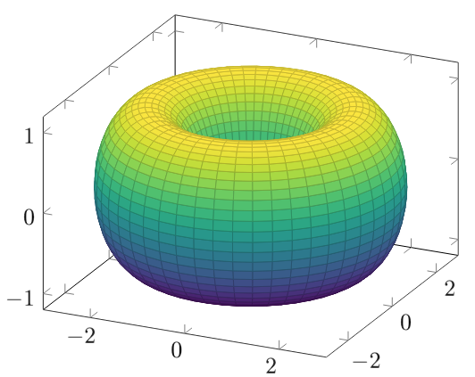
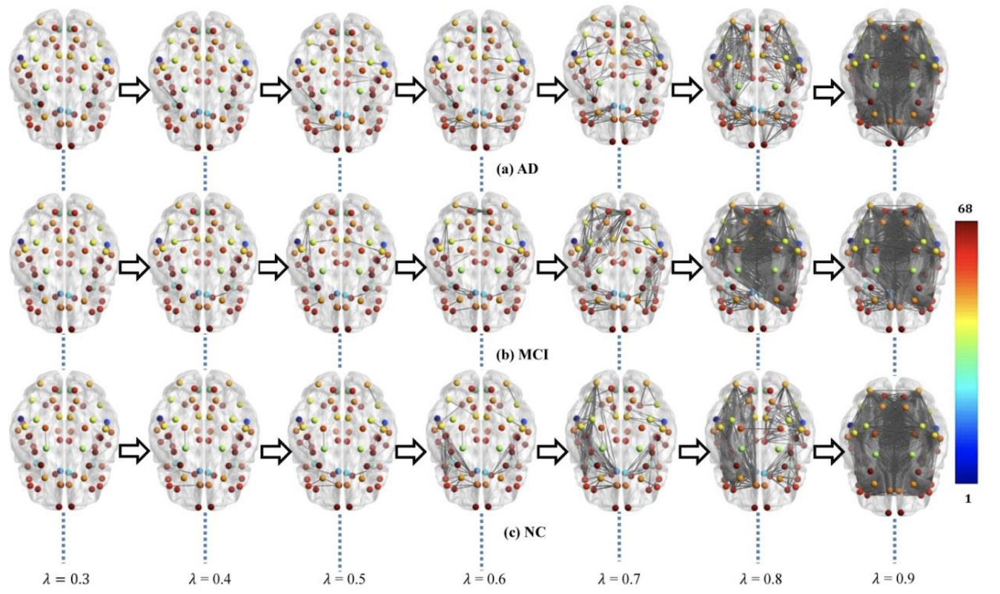

Topological analysis of transneuronal spreading mechanisms in neurodegenerative diseases by persistent homology
Serifovic, Muriz
2021-11-10
Introduction
Many neurodegenerative diseases, such as Alzheimer's disease (AD), Parkinson's disease (PD), and amyotrophic lateral sclerosis (ALS), are characterized by the buildup of abnormal protein clusters within the nervous system. These clusters disrupt brain networks and lead to distinctive metabolic changes, as noted by Jucker et al. (2018).
Jucker, M., & Walker, L. C. (2018). Propagation and spread of pathogenic protein assemblies in neurodegenerative diseases. Nature neuroscience, 21(10), 1341–1349. https://doi.org/10.1038/s41593-018-0238-6.
These protein clusters form through a process akin to prion aggregation, where specific misfolded proteins accumulate and cause internal and external cellular damage typical of each disease, such as $\alpha$-synuclein in PD and amyloid and tau in AD.
Neuroimaging studies suggest that changes in brain metabolism are influenced by brain connectivity. Different brain regions are selectively more vulnerable to specific neurodegenerative diseases, and the patterns of brain degeneration align with these connectivity networks.
Shedding light on the specific relationship between the topology of brain network connectivity and disease patterns can provide insights into the underlying mechanisms of disease spread (Garbarino et al., 2019).
Garbarino, S., Lorenzi, M., Oxtoby, N. P., Vinke, E. J., Marinescu, R. V., Eshaghi, A., Ikram, M. A., Niessen, W. J., Ciccarelli, O., Barkhof, F., Schott, J. M., Vernooij, M. W., Alexander, D. C., & Alzheimer’s Disease Neuroimaging Initiative (2019). Differences in topological progression profile among neurodegenerative diseases from imaging data. eLife, 8, e49298. https://doi.org/10.7554/eLife.49298.
Therefore, with recent advances in computational topology, we introduce how simplicial complexes and persistent homology can be used to analyze the spatiotemporal patterns in the progression of AD and its early stage, mild cognitive impairment (MCI). This methodology highlights the innovative work by Kuang et al. (2020)
Kuang, L., Gao, Y., Chen, Z., Xing, J., Xiong, F., & Han, A. X. (2020). White Matter Brain Network Research in Alzheimer's Disease Using Persistent Features. Molecules (Basel, Switzerland), 25(11), 2472. https://doi.org/10.3390/molecules25112472..
Algebraic Topology
Background
Algebraic topology is typically concerned with the "shape" of topological spaces, or, more accurately, the properties of a space that remain invariant when stretched and shrunk.
It has proven beneficial in elucidating the function of brain systems at both macro and microscales (for a survey we refer the reader to Sizemore et al., 2019).
Ann E. Sizemore, Jennifer E. Phillips-Cremins, Robert Ghrist, Danielle S. Bassett; The importance of the whole: Topological data analysis for the network neuroscientist. Network Neuroscience 2019; 3 (3): 656–673. doi: https://doi.org/10.1162/netn_a_00073.
We will restrict the mathematical discourse to a minimum and refer the reader to Hatcher (2001) and Edelsbrunner et al. (2002) for a more comprehensive and rigorous treatment.
Let us now fix some notation and we follow, if not stated otherwise, the notation from Edelsbrunner et al. (2002). Hatcher, Allen. Algebraic Topology, 2001.Edelsbrunner, Letscher & Zomorodian Topological Persistence and Simplification. Discrete Comput Geom 28, 511–533 (2002). https://doi.org/10.1007/s00454-002-2885-2.
Definition 1.1 (Convex set). A set $\mathbb{C}$ is convex if for any two points $p_1, p_2 \in \mathbb{C}$ and $\lambda \in[0,1]$ the point $\lambda p_1+(1-\lambda)p_2$ is in $\mathbb{C}$.A torus has Betti numbers: $\beta_0=1$, $\beta_1=2$, $\beta_2=1$. From "Persistent Homology and Barcodes" Undergraduate Seminars in Mathematics II - Elementary Applied Topology Instructor: Song Yu, Helen Jin and Saveliy Yusufov, Link.
Definition 1.2 (Convex hull). The convex hull of a set of points $\mathcal{P}$ of an euclidean space $\mathbb{R}^{n}$ is with all possible convex combinations of subsets of $\mathcal{P}$ denoted by:
$$
\operatorname{conv}(\mathcal{P})=\left\{\sum_{h=1}^{N} \lambda_{h} p_{h}: \lambda_{h} \geq 0 \forall h \text { and } \sum_{h=1}^{N} \lambda_{h}=1\right\}.
$$
The convex hull $\operatorname{conv}(\mathcal{P})$ is the unique minimal convex set containing $\mathcal{P}$.
Definition 1.3 (k-simplex). A k-simplex is the convex hull $\sigma$ of $k+1$ affinely independent points:
$$
\sigma=\left\{\sum_{h=0}^{k} \lambda_{h} p_{h}: \lambda_{h} \in \mathbb{R}, \lambda_{h} \geq 0 \forall h, \sum_{h=0}^{k} \lambda_{h}=1\right\}.
$$
Rabadan, Raul, and Andrew J. Blumberg. Topological Data Analysis for Genomics and Evolution: Topology In Biology..
Loosely speaking, we might think of a $k$-simplex as the simplest $k$ dimensional polyhedron: the $0$-simplex is a
vertex, the $1$-simplex is an edge, the $2$-simplex is a triangle, and the $3$-simplex
is a tetrahedron.
Definition 1.4 (Face $\tau$ of a k-simplex). A face $\tau$ of a k-simplex $\sigma$ is the simplex defined by a non-empty subset of the $k+1$ points of $\sigma$ and is denoted as $\tau$.
If $\tau$ is a proper subset of $\sigma$, then it is a proper face $\tau <\sigma$, otherwise we denote it as a face $\tau \leq \sigma$.
Definition 1.5 (Simplicial Complex). A simplicial complex $\mathcal{X}$ is a finite collection of k-simplexes such that every face $\tau$ of any simplex $\sigma \in \mathcal{X}$ is also in $\mathcal{X}$
and given any two simplices $\sigma, \tau \in \mathcal{X}$ they intersect in a common face of each of them.
Definition 1.6 (k-chain).
A k-chain $C_k$ of a simplicial complex $\mathcal{X}$ is a formal linear combination defined by
$$
C_{k}(\mathcal{X})=\left\{\sum_{i} a_{i} \sigma_{i} \mid a_{i} \in \mathbb{Z}\right\},
$$
where p-simplexes $\sigma_i$ of $\mathcal{X}$.
Definition 1.7 (Homology group).
The simplicial k-th homology group of $\mathcal{X}$ is the following quotient group:
$$
H_k=Z_k/B_k.
$$
Tierny, Julien. Topological Data Analysis for Scientific Visualization..
Definition 1.8 (Betti number).
The i-th Betti number of simplicial complex $\mathcal{X}$ is the rank of its $k^{\textit{th}}$ homology group:
$$
\beta_i:=\operatorname{rank}\left(H_k\left(\mathcal{X}\right)\right)
$$
Definition 1.9 (Euler Characteristic).
Let $X$ be a finite CW-complex with dimension of at most $d$. Then the Euler characteristic is defined by the following alternating sum:
$$
\chi(X)=\sum_{i=0}^{d}(-1)^{i} \beta_{i}
$$
Definition 1.10 (Homeomorphic spaces). Topological spaces $\mathbb{A}$ and $\mathbb{B}$ are homeomorphic if and only if there exists a bijection $f: \mathbb{A} \rightarrow \mathbb{B}$ such that $f$ and $f^{-1}$ are continuous maps.Moraleda, R.R., Valous, N.A., Xiong, W., & Halama, N. (2019). Computational Topology for Biomedical Image and Data Analysis: Theory and Applications (1st ed.). CRC Press. https://doi.org/10.1201/9780429443077.
Definition 1.11 (Vietoris-Rips complex).
Given a metric space $X$ and $\epsilon>0$ the Vietoris-Rips complex $\operatorname{VR}_{\epsilon}(X)$ is the simplicial complex:
$$
\operatorname{VR}_{\epsilon}(X)=\{\sigma \mid \operatorname{diam}(\sigma) \leq \epsilon\}
$$
Kuang et al. (2020) use persistent features to quantify the topological property of white matter (WM) network in 150 subjects with
diffusion tensor imaging (DTI). Unlike graph-theoretic approaches, persistent homology is robust to noise and may help in the analysis of the global structure network in WM brain connectome.
Kuang et al. (2020); Figure 2: "Multiscale WM networks of the three groups, AD (a), MCI (b), and NC (c), at some filtrations where color bar shows the ROI index. The AD group shows more sparse connections (i.e., more segregated connected components) comparing to controls when the filtration values are smaller $(\lambda \leq 0.8)$."

Discussion
They used each subject’s original weighted network. The networks were constructed based on Desikan-Killiany brain
atlas with 68 region-of-interests (ROIs).
Their work suggests that network measures are sensitive to the brain parcellation strategies.
By performing identity experiments on three other parcellation schemes (i: a subcortical parcellation including amygdala, hippocampus, thalamus,
caudate, putamen, pallidum, nucleus accumbens, and ventral; ii: a 90 regions atlas; iii: division of 68 ROI atlas into 4 subgroups with a parcellation division algorithm), they've evaluated the robustness of their finding
and conclude that persistent features are more robust than graph-theoretic methods for the taxonomy
of topological deterioration in AD and MCI.